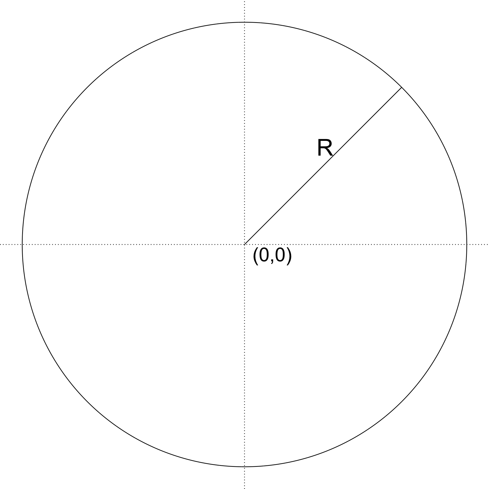
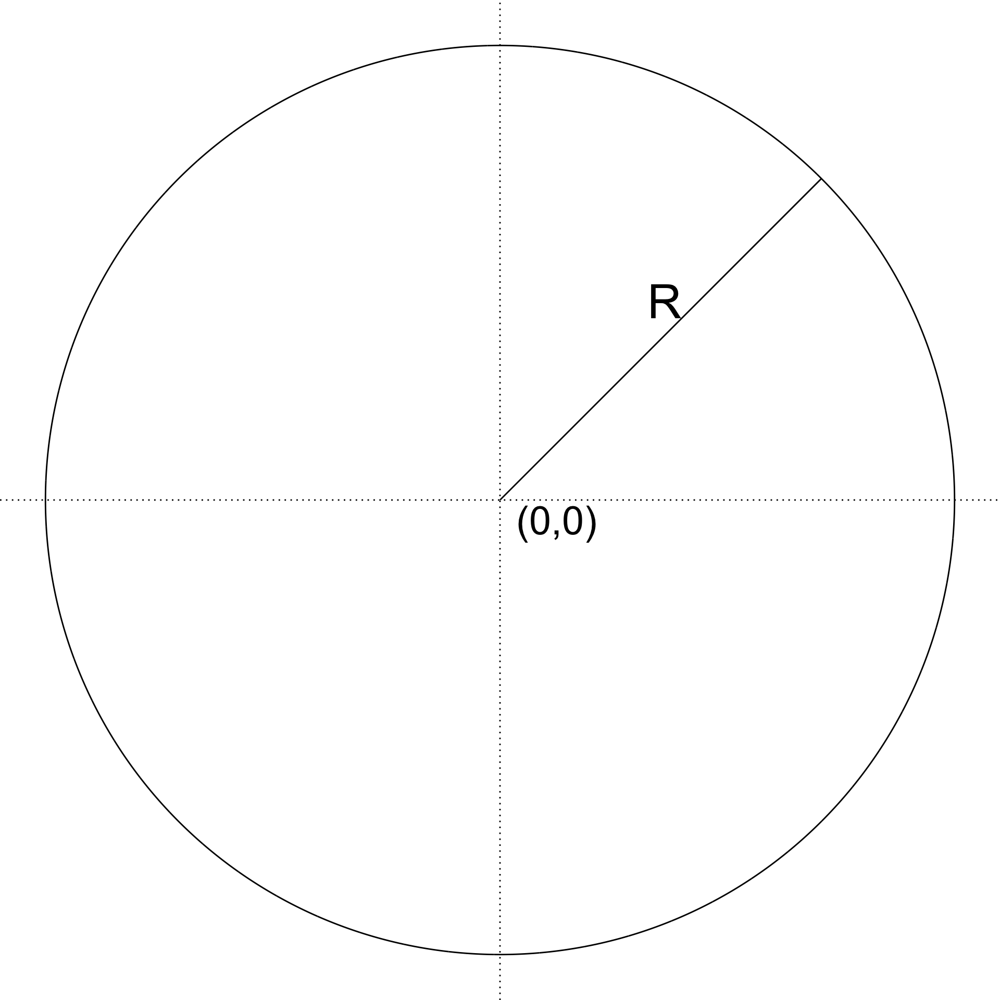
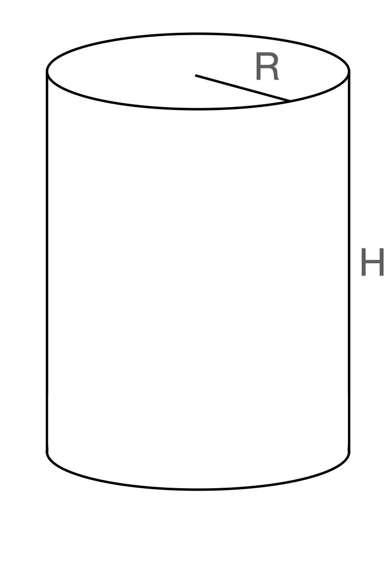
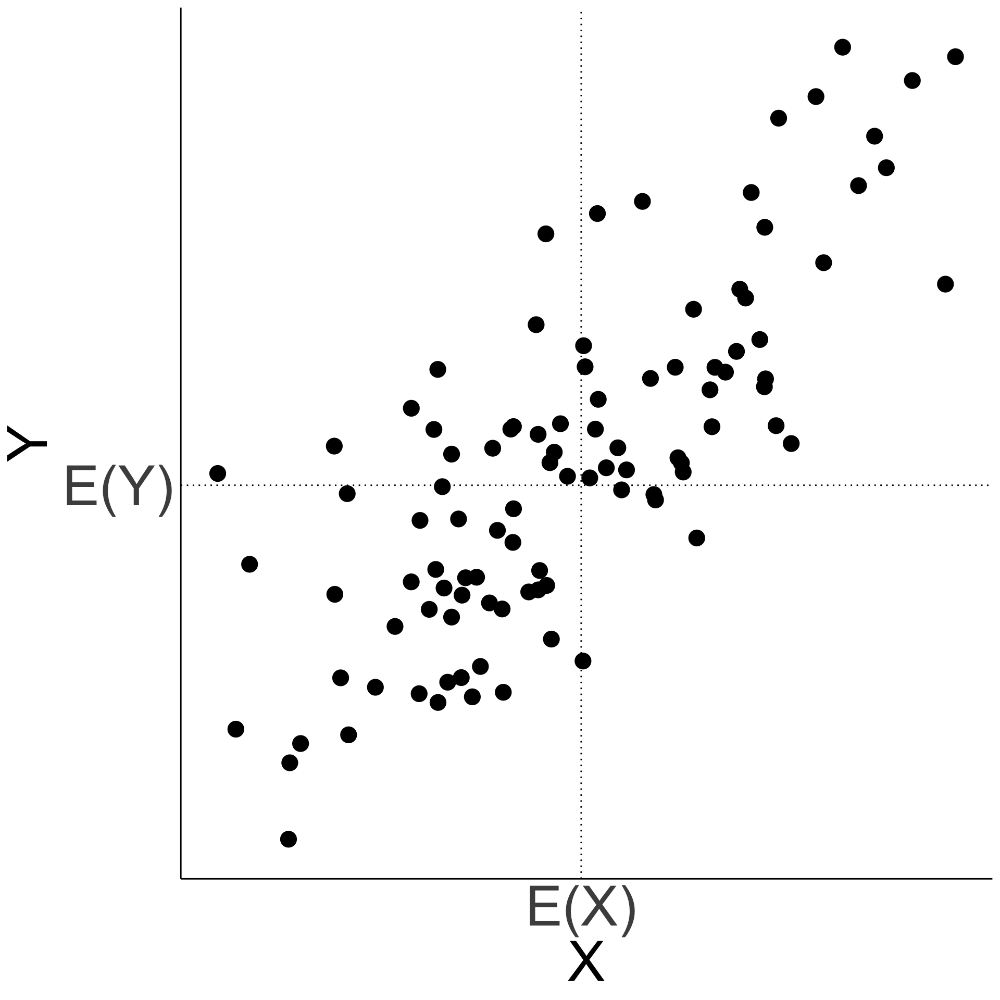
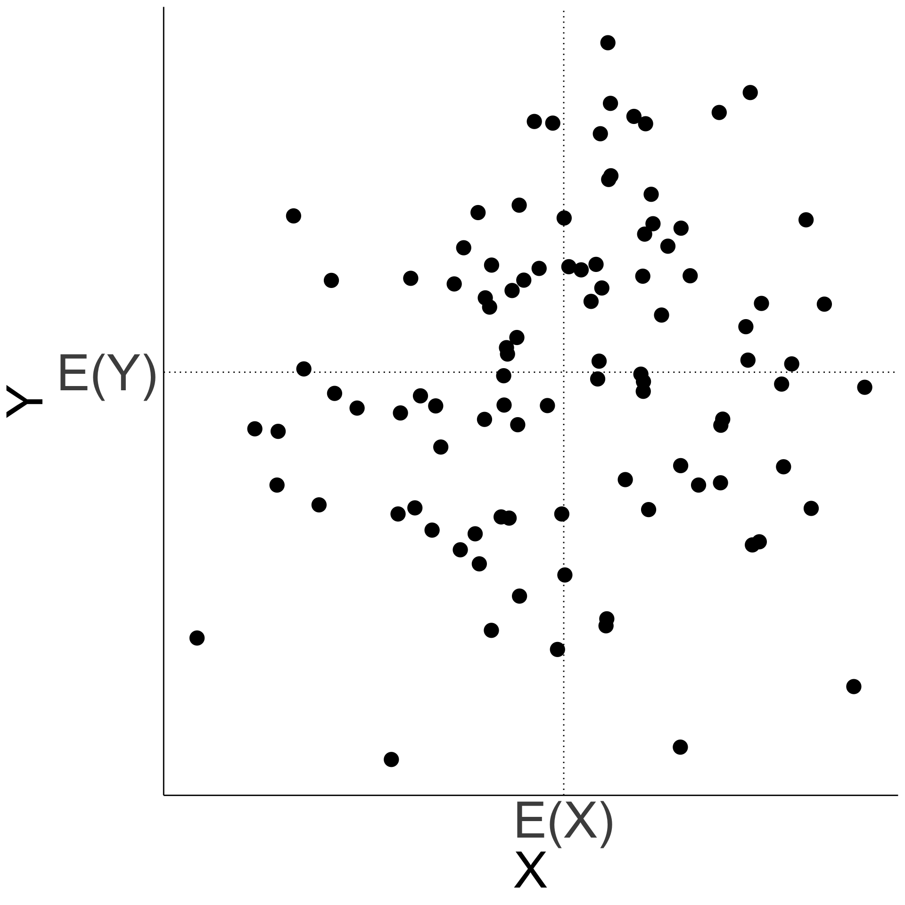
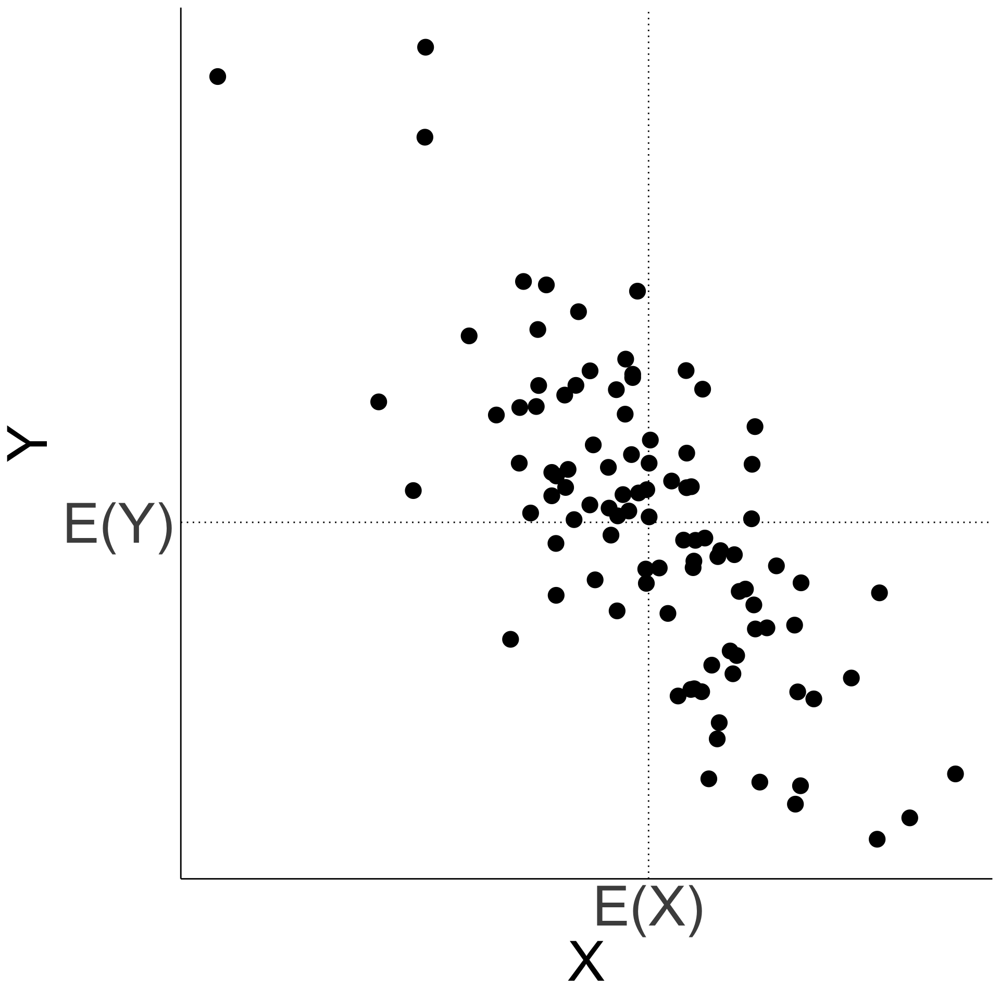
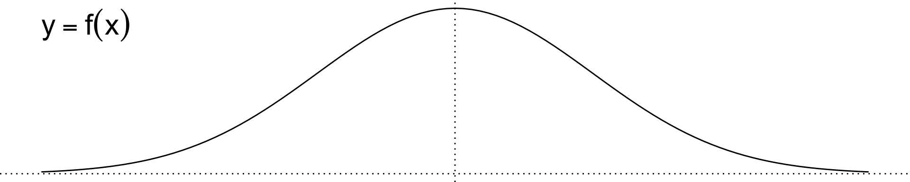
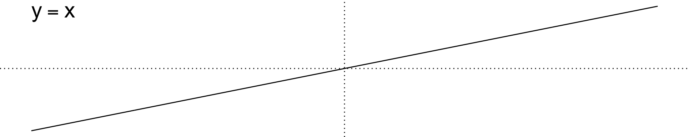
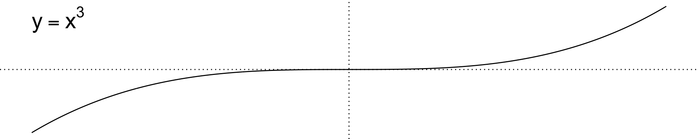

STA237: Probability, Statistics, and Data Analysis I
Michael Jongho Moon
PhD Student, DoSS, University of Toronto
June 8, 2022

Consider a circle with radius \(R\). Suppose \(R\) is a continuous random variable with probability density function \(f_R\)
\[f_R\left(r\right)=\frac{3}{16}\left(r-2\right)^2\quad\text{for }0\le r\le 4.\]
What is the expected value of the area of the circle?

Now suppose we are interested in the volume of the cylinder with height \(H\) where \(H\sim \text{U}(0,5)\) independent of \(R\).
What is the expected value fo the volume of the cylinder?
\[E\left(\pi R^2 H\right)= E\left[g\left(\pi R^2,H\right)\right],\]
where \(g\left(x,y\right)=x\cdot y\).
Let \(X\) and \(Y\) be random variables, and let \(g:\mathbb{R}^2\to\mathbb{R}\) be a function. If \(X\) and \(Y\) are discrete random variables with values \(a_1\), \(a_2\), … and \(b_1\), \(b_2\), …, respectively, and with joint probability mass function \(p_{X,Y}\), then
\[E\left[g\left(X,Y\right)\right]=\sum_i\sum_j g\left(a_i,b_j\right)p_{X,Y}\left(a_i,b_j\right).\]
If \(X\) and \(Y\) are continuous random variables with joint probability density function \(f_{X,Y}\), then
\[E\left[g\left(X,Y\right)\right]=\int_{-\infty}^\infty\int_{-\infty}^\infty g\left(x,y\right)f_{X,Y}\left(x,y\right)dxdy.\]
\[E\left(\pi R^2 H\right)= \int_{-\infty}^\infty\int_{-\infty}^\infty\left(\pi r^2 h\right) f_{R,H}\left(r, h\right) dr dh\]
\[E\left(\pi R^2 H\right)= \int_{-\infty}^\infty\int_{-\infty}^\infty\left(\pi r^2 h\right) f_R(r)f_H(h) dr dh\]
Do we always have \(E\left[g\left(X, Y\right)\right]=g\left[E\left(X\right),E\left(Y\right)\right]\)?
Let \(U\) and \(V\) be two random variables with joint probability distribution defined by the following probability mass function.
a |
||||
|---|---|---|---|---|
| 0 | 1 | 2 | P(V=b) | |
| b | ||||
| 0 | 1/4 | 0 | 1/4 | 1/2 |
| 1 | 0 | 1/2 | 0 | 1/2 |
| P(U=a) | 1/4 | 1/2 | 1/4 | 1 |
Compute \(E\left(UV\right)\).
How about \(E(U)E(V)\)?
We have \(E\left[g\left(X, Y\right)\right]=g\left[E\left(X\right),E\left(Y\right)\right]\) again.
Let \(U\) and \(V\) be two random variables with joint probability distribution defined by the following probability mass function.
a |
||||
|---|---|---|---|---|
| 0 | 1 | 2 | P(V=b) | |
| b | ||||
| 0 | 1/4 | 0 | 1/4 | 1/2 |
| 1 | 0 | 1/2 | 0 | 1/2 |
| P(U=a) | 1/4 | 1/2 | 1/4 | 1 |
Compute \(E\left(U+V\right)\).
How about \(E(U)+E(V)\)?
We have \(E\left[g\left(X, Y\right)\right]=g\left[E\left(X\right),E\left(Y\right)\right]\) again.
When do we have
\(E\left[g\left(X, Y\right)\right]=g\left[E\left(X\right),E\left(Y\right)\right]\)?
For all numbers \(a\), \(b\), and \(c\) and random variables \(X\) and \(Y\), we have
\[E\left(aX+bY+c\right)=aE\left(X\right)+bE\left(Y\right)+c.\]
For two continuous random variables with joint probability density function \(f_{X,Y}\), show that the following statement is true:
\[E\left(X+Y\right)=E\left(X\right)+E\left(Y\right).\]
When do we have
\(E\left[g\left(X, Y\right)\right]=g\left[E\left(X\right),E\left(Y\right)\right]\)?
Consider random variables \(X\) and \(Y\) with joint probability density function \(f\)
\[f\left(x,y\right)=\frac{2}{75}\left(2x^2y + xy^2\right),\]
for \(0\le x\le3\) and \(1\le y\le2\), and \(0\) otherwise.
Compute \(\text{Var}\left(X+Y\right)\).
How about \(\text{Var}(X)+\text{Var}(Y)\)?
\(\text{Var}\left(X+Y\right)\)
\(=E\left[\left(X+Y\right)^2\right]-\left[E\left(X+Y\right)\right]^2\)
\(=E\left(X^2\right)+E\left(Y^2\right)\)
\(\phantom{==}-\left[E\left(X\right)\right]^2-\left[E\left(Y\right)\right]^2\)
\(\phantom{==}+2E\left(XY\right)-2E\left(X\right)E\left(Y\right)\)
\(\text{Var}\left(X\right)+\text{Var}\left(Y\right)\)
\(=E\left(X^2\right)-\left[E\left(X\right)\right]^2+E\left(Y^2\right)-\left[E\left(Y\right)\right]^2\)
\(=E\left(X^2\right)+E\left(Y^2\right)\)
\(\phantom{==}-\left[E\left(X\right)\right]^2-\left[E\left(Y\right)\right]^2\)
When \(E\left(XY\right)-E\left(X\right)E\left(Y\right)\neq 0\), we have \(\text{Var}\left(X+Y\right)\neq \text{Var}\left(X\right)+\text{Var}\left(Y\right)\).
Let \(X\) and \(Y\) bet two random variables. The covariance between \(X\) and \(Y\) is defined as
\[\text{Cov}\left(X,Y\right)=E\left[\left(X-E\left[X\right]\right)\left(Y-E\left[Y\right]\right)\right].\]
\[\text{Cov}\left(X,Y\right)=E\left(XY\right)-E\left(X\right)E\left(Y\right)\]
Positively correlated \[\text{Cov}\left(X,Y\right)>0\]

Uncorrelated
\[\text{Cov}\left(X,Y\right)=0\]

Negatively correlated \[\text{Cov}\left(X,Y\right)<0\]

\[\text{Cov}\left(aX+b, cY+d\right)=ac\cdot\text{Cov}\left(X,Y\right)\]
\[\text{Var}\left(X\right)=\text{Cov}\left(X,X\right)\]
\[\text{Cor}\left(X,Y\right)=E\left(XY\right)-E\left(X\right)E\left(Y\right)=0\] \[\implies E\left(XY\right)=E\left(X\right)E\left(Y\right)\]
When do we have
\(E\left[g\left(X, Y\right)\right]=g\left[E\left(X\right),E\left(Y\right)\right]\)?
Let \(X\) and \(Y\) be two random variables. The correlation coefficient \(\rho\left(X,Y\right)\) is defined to be \(0\) if \(\text{Var}\left(X\right)=0\) or \(\text{Var}\left(Y\right)=0\), and
\[\rho\left(X,Y\right)=\frac{\text{Cov}\left(X,Y\right)}{\sqrt{\text{Var}\left(X\right)\text{Var}\left(Y\right)}}\quad \text{otherwise.}\]
Determine \(\rho\left(U,U^2\right)\) when \(U\sim \text{U}\left(0,a\right)\) for some \(a>0\).
Determine \(\rho\left(U,U^2\right)\) when \(U\sim \text{U}\left(0,a\right)\) for some \(a>0\).
\[\rho\left(U,U^2\right)=\frac{a^3/12}{\sqrt{\left(a^2/12\right)\left(4a^4/45\right)}}=\frac{\sqrt{15}}{4}\]
Let \(X\sim N\left(0,1\right)\) and \(Y=X^2\).
Are they independent? How about correlation?
They are obviously dependent since \(Y=X^2\)
Checking whether \(\text{Cov}\left(X,Y\right)=0\) …
\[E\left(X^3\right)=0\] since \(X^3\) is symmetric around 0.
That is, \(P(X^3>0)=P(X^3<0)=1/2\).



Let \(X\sim {N}\left(0,1\right)\) and \(Y=X^2\).
Are they independent? How about correlation?
Checking whether \(\text{Cov}\left(X,Y\right)=0\) …
Let \(X\sim N\left(0,1\right)\) and \(Y=X^2\).
Are they independent? How about correlation?
\[\text{Cov}\left(X,Y\right)=0\]
1Show this as a practice exercise.
When do we have
\(E\left[g\left(X, Y\right)\right]=g\left[E\left(X\right),E\left(Y\right)\right]\)?
Recall for any two random variables \(X\) and \(Y\),
\(\text{Var}\left(X+Y\right)=E\left(X^2\right)+E\left(Y^2\right)\)
\(\phantom{==}-\left[E\left(X\right)\right]^2-\left[E\left(Y\right)\right]^2\)
\(\phantom{==}+2E\left(XY\right)-2E\left(X\right)E\left(Y\right)\).
Or, \(\text{Var}\left(X+Y\right)=\text{Var}\left(X\right)+\text{Var}\left(Y\right)+2\text{Cov}\left(X,Y\right).\)
Similarly, we can show that
\(\text{Var}\left(X-Y\right)=\text{Var}\left(X\right)+\text{Var}\left(Y\right)-2\text{Cov}\left(X,Y\right).\)
When \(X\) and \(Y\) are uncorrelated, \(\text{Cov}\left(X,Y\right)=0\)
\[\implies \text{Var}\left(X+Y\right)=\text{Var}\left(X\right)+\text{Var}\left(Y\right)\]
We can expand the property to \(n\) uncorrelated random variables, \(X_1\), \(X_2\), …, \(X_n\).
\[\text{Var}\left(X_1+X_2+\cdots+X_n\right)=\sum_{i=1}^n\text{Var}\left(X_i\right)\]
Suppose \(Y\sim\text{Bin}\left(n,p\right)\).
Recall that \(Y\) is a sum of \(n\) independent random variables that follow \(\text{Ber}\left(p\right)\).
Compute \(E\left(Y\right)\) and \(\text{Var}\left(Y\right)\).
\[E\left(Y\right)=np\quad\text{and}\quad\text{Var}\left(Y\right)=np\left(1-p\right)\]
© 2022. Michael J. Moon. University of Toronto.
Sharing, posting, selling, or using this material outside of your personal use in this course is NOT permitted under any circumstances.